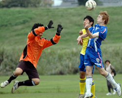
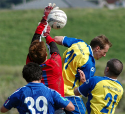
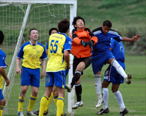
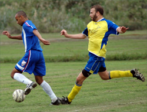
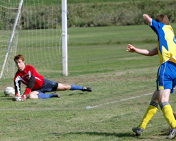
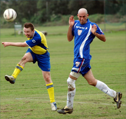
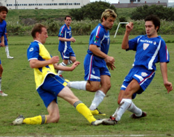

|
Misato, Saturday 6th October,

BFC made heavy work of beating Geckoes 3-2 but still managed to make it four wins out of four this season. The TML champions were not helped by three late pull-outs on the morning of the game.
Had it not been for a late goal from Brian 'The Engine' Doyle, dropping two points after being 2-0 up would have stung for weeks.
TREVOR FRANCIS TRACKSUITS
Do the Geckoes play trumpets into the early hours outside the bedrooms of BFC players the night before games?
BFC turned up with a bare eleven to play Geckoes in last season's Footy Japan Cup semi-final and were beaten. BFC skipper Jon Day was fielding calls from sheepish players crying off on the way to this game.

BFC turned up with 12, with Day still nursing a dicky ankle. Plume de ma tante!
BFC still began brightly but it took them 20 minutes to find the breakthrough, striker Shawn Kee bravely putting his life on the line by connecting with a scud missile of a free kick from Garry Robertson to head in superbly from 10 yards. And then throw up some 'signs' old skool-style. 'Recognise!' he seemed to be suggesting. We do, mate. We do.
BFC made it 2-0 five minutes later, Dan Clarke clearing space for Alastair Himmer, lurking with intent (rather he was still there from the previous attack), to bring down Te-oh's cross on his chest and, as the goalkeeper flapped about, tuck the ball home with all the urgency of someone putting on the kettle.
 It got worse for Geckoes when defender Masa Kenmochi was sent off for pulling Clarke's shirt with the GameBoy star racing clear -- a good decision from referee 'Q' who had a good game.
Young Shawn then shaved the bar as BFC threatened to kill off the game before the interval, despite a late scare from a corner, courtesy of some shocking marking from BFC. You would still have expected the halftime whistle to have come as more of a relief to Geckoes than BFC.
DAD'S ARMY
A pudding of a pitch was taking its toll on several players, however, and the absence of Carlos Aranda, Pablo Pomares and, particularly, Shosuke Yamagishi was being felt by those not carrying knocks or suffering cramp.
BFC appeared in control. And then suddenly it all went Frank Spencer. BFC looked more Dad's Army than TML champions and when Tom Kiley finished off a nice Geckoes move, the cat wasn't so much amongst the pigeons as in a bag with them.
It went tits-up for BFC next when Geckoes, now matching them in footballing terms, not just shouting loud, equalised, Andy Gill driving through the gaping void that had been BFC's defence to beat Jason Leonardis at his near post. Credit where it's due, though, to 10-man Geckoes.
BFC's ranks now resembled a scene from Blackadder Goes Forth, the one in which Blackadder is out in 'No-Man's-Land' with George and Baldrick and George jumps up to inform his captain 'They're firing, sir! They're firing!'
Hugh Laurie grew up to become Dr. House, however, and you don't get to be champions without being a bit, well, grown-up.
BFC duly picked up their toys and recovered their composure after that 15 minutes of madness, Te-oh, Rouven Woszlido and (in a lovely surprise) Leigh Manson combining well down the left.
Clarke, a real find for the BFC, continued to probe on the right, bringing a low save from the Geckoes keeper. Woszildo was clean through but went for finesse instead of power and dinked the ball into the goalkeeper's arms. Nein!

The signs were there but when the coup de grace came from BFC, it was a touch harsh on Geckoes. It was still a nice move, the ball swept from Woszildo to Day and a cheeky flick through to a streaking Doyle (a revolting image perhaps).
As the three catholics among the BFC players dropped to their knees and promised never to have wicked thoughts on the Yamanote Line again (feighnights, obviously), Doyle thankfully went for power and drove his shot clinically into the far corner. Chateauneuf du Pape!
BIG UP YERSELF
As I said, it was tough on Geckoes, who again demonstrated just how competitive the TML is getting. BFC hobbled away exhausted and thankful for two week's rest, although the character shown by the side in adversity was, well, quite emotional really.

Geckoes were graceful in defeat, which was nice. We await, meanwhile, with baited breath the next irrelevant YouTube link.
What next? A clip of Sepp Blatter visiting TML headquarters? A NASA probe collecting microbes from deep space? Krakatoa erupting perhaps? Herds of wilderbeast sweeping majestically across the plains?
After a beautiful start to the season, with the French rightly being applauded for putting the ball out while on the attack to allow an opponent to receive treatment, reading on the TML website that one side were giving their rivals permission not to take the sporting option left a lovely, warm glow.
Report by Puma Black
|